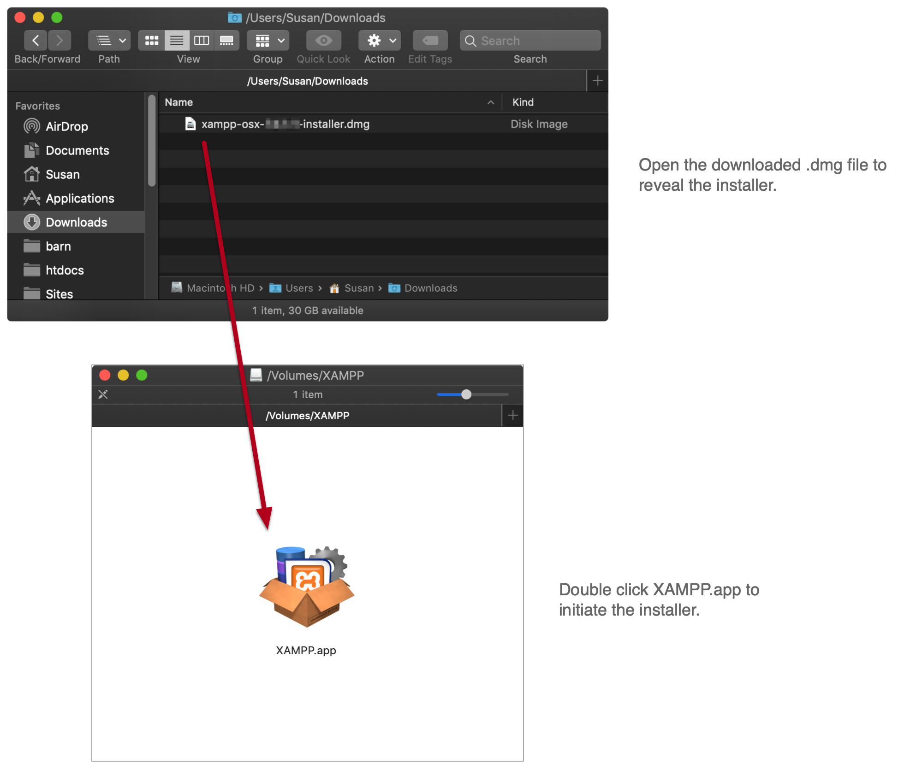
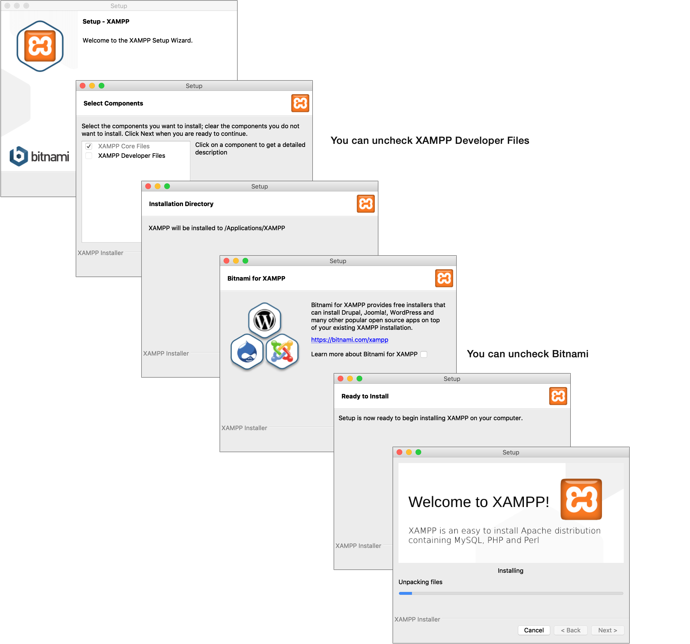
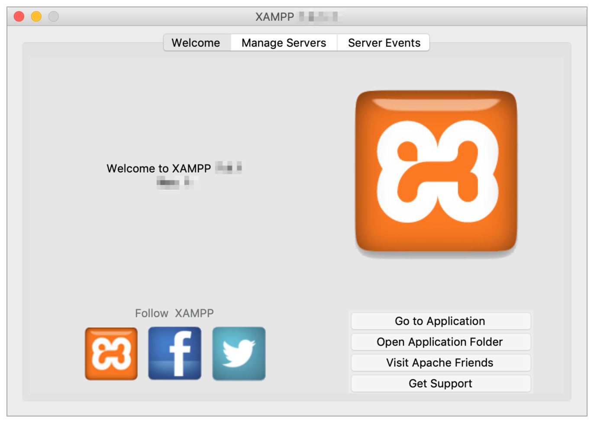
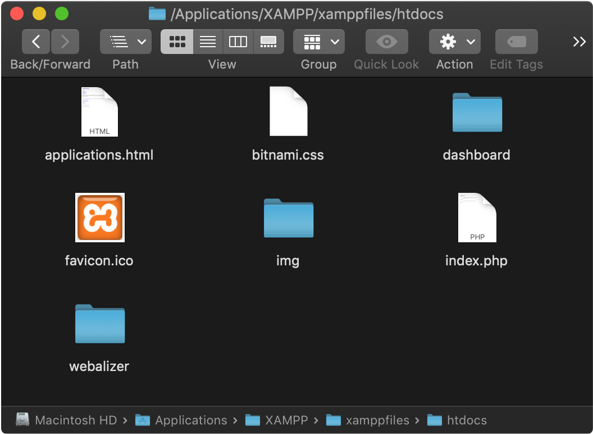

Mac - XAMPP setup instructions
Download
Download:
7.4.9/xampp-osx-7.4.9-0-installer.dmg
Important: Use my download link above. Avoid downloading directly from the XAMPP site— their downloads page is labeled poorly and it’s easy to accidentally download the “VM” (Virtual Machine) version of XAMPP, which we don’t want.
Updating XAMPP (FYI for returning students)
If you’ve recently taken a course with me and already have XAMPP installed, it’s not required that you update.
However, if you choose to update, first make a backup copy of the following directory/files, as they will be erased during an update:
- Document root directory:
/Applications/XAMPP/xamppfiles/htdocs - VirtualHosts file :
/Applications/XAMPP/etc/extra/httpd-vhosts.conf - Apache config file:
/Applications/XAMPP/xamppfiles/etc/httpd.conf
Update procedures:
- Run
/Applications/XAMPP/uninstall.appto uninstall - Follow the download/install instructions shown on this page to reinstall
- Replace the above listed directory/files with your backups
Install
Typically, to install an app on a Mac you just download it and move it to your Applications folder. XAMPP is different— they have an installer.
Here are the steps of the installer:
{kind=link}
Once installation is complete, you’ll see the XAMPP Application Manager:
Start servers
Within the XAMPP Application Manager switch to the Manage Servers tab, select the server you wish to start, and then click Start. A server is successfully running when it’s lit up green.
- e28 students - You only need Apache to run.
- e2 and e15 students - You’ll need Apache and MySQL.
If a server won’t start, skim down to the troubleshooting section below.
Document root
Now that your local server is running, you can start sending requests to it from the browser via the url
http://localhost.
These requests will be routed to a document root configured on your server; by default,
the XAMPP document root is set to /Applications/XAMPP/xamppfiles/htdocs.
Out of the box, this directory will have the following contents:
When a request is made to a server, it’s typically configured to look for an index file to serve.
Given that, in our setup, when we visit http://localhost, it will look in the
document root
(/Applications/XAMPP/xamppfiles/htdocs) for an index file. The index file can be of
different
types, but in this example it’s a PHP file: index.php.
To prove this, we want to replace the default contents of the XAMPP index.php file
with our
own content, then load it in the browser.
To do this, first delete the existing index.php file, then create a new one, also
called
index.php, with the following content. (We’re creating a new index.php rather
than editing the existing one as the original one has default permissions which will prevent you from
editing it.)
<!doctype html>
<html lang='en'>
<head>
<title>Hello from my XAMPP-powered server!</title>
<meta charset='utf-8'>
</head>
<body>
<h1>Hello from my XAMPP-powered server!</h1>
</body>
</html>
Save your changes, then visit http://localhost in your browser and you should see the
following:
Config & Logs
When working with or troubleshooting a server, it can be necessary to access your server’s config files and error logs so make note of the following locations:
Apache
- Error log:
/Applications/XAMPP/xamppfiles/logs/error_log - Configuration file:
/Applications/XAMPP/xamppfiles/etc/httpd.conf
MySQL
- Error log:
/Applications/XAMPP/xamppfiles/logs/mysql_error - Configuration file:
/Applications/XAMPP/xamppfiles/etc/my.conf
Take a moment to open these files so you’re familiar with them, as you’ll need to refer to them when errors arise or you need to make configuration changes. Note that some log files might not exist if nothing has been written to them yet.
- Make a backup copy of config files before making any changes
- If you make a change to a config file, the server needs to be restarted to recognize those changes
- Whenever asking for help in the forum, be sure to include relevant details from error log files
Troubleshooting
If your XAMPP Apache or MySQL servers (e2 and e15 students) won’t start, the first place you want to check for clues is your log files (info above). Log files may provide errors or context explaining why the servers can’t start.
Sometimes, though, the problem is a result of a port conflict, in which case you won’t see any details in your error log. The following steps describe how to resolve a port conflict.
Port conflict
The #1 cause of XAMPP not being able to start Apache or MySQL is a conflicting port issue.
XAMPP uses the typical default for Apache (80) and MySQL’s (3306)
ports, but
your computer may already be using those ports for something else (including existing installations of
Apache or MySQL).
As an example of how to troubleshoot this, let’s imagine XAMPP’s Apache won’t start. In command line, run the following command to see what other processes might be using port 80:
$ sudo lsof -i :80
If you’re having difficulties with starting MySQL, use this same command but swap port 80 out for 3306.
Example output if processes were found:
$ sudo lsof -i :80
COMMAND PID USER FD TYPE DEVICE SIZE/OFF NODE NAME
Google 26229 Susan 29u IPv4 0xb68dc7a6f59f5dd7 0t0 TCP 192.168.7.54:65001->lga34s12-in-f16.1e100.net:http (CLOSED)
Google 26229 Susan 31u IPv4 0xb68dc7a76dc39a17 0t0 TCP 192.168.7.54:65002->lga34s16-in-f14.1e100.net:http (CLOSED)
Google 26229 Susan 33u IPv4 0xb68dc7a792a1b557 0t0 TCP 192.168.7.54:65003->173.194.185.199:http (CLOSED)
httpd 68172 root 4u IPv6 0xb68dc7a6e89184e7 0t0 TCP *:http (LISTEN)
httpd 68176 _www 4u IPv6 0xb68dc7a6e89184e7 0t0 TCP *:http (LISTEN)
From these results, we can see a PID (Process ID) in the second column. You can then use the following command to find out more details about a process via it’s given process id. For example:
$ ps u 68172
And you can use the following command to stop a given process, in order to free up the desired port:
$ sudo kill 68172
Repeat this step for any process using the port in question. When you’re done, run
sudo lsof -i :80 again and confirm there are no more processes using port 80, then
attempt to
start XAMPP's Apache again.
If you run into a problem where the processes just keep regenerating despite you stopping them, try the following commands to disable Mac’s default Apache install, and kill any other rogue Apache processes:
$ sudo launchctl unload -w /System/Library/LaunchDaemons/org.apache.httpd.plist
$ sudo killall httpd
Hopefully, that should finally free up port 80, and you should be able to start Apache from XAMPP.
Using alternative ports
If you are unable to free up the 80/3306 ports, or you wish to reserve these ports for existing software on your machine, you can use alternative ports as a last-resort.
Common alternative ports are 8888 for Apache and 8889 for MySQL.
Ports can be configured via the server’s configuration files, or from the XAMPP interface.
If you use an alternative Apache port, you will have to append this port to your URLs, e.g.
http://localhost:8888.